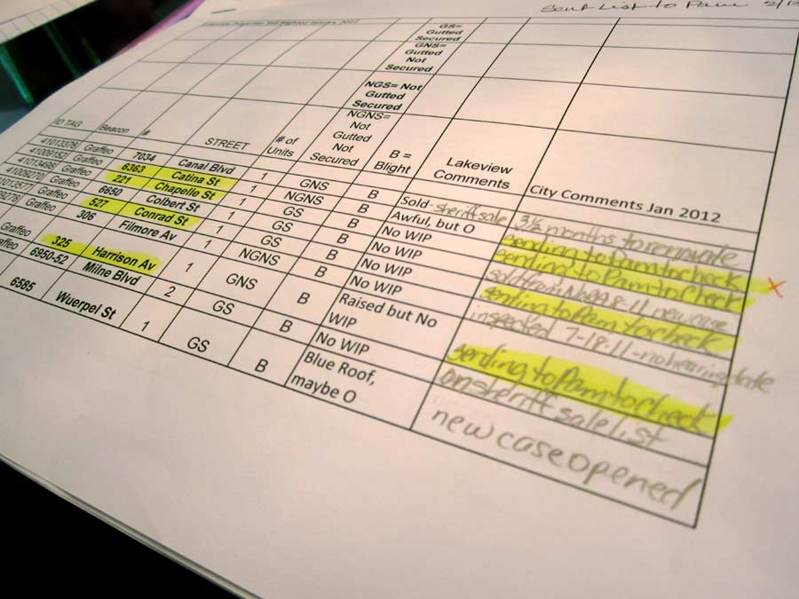
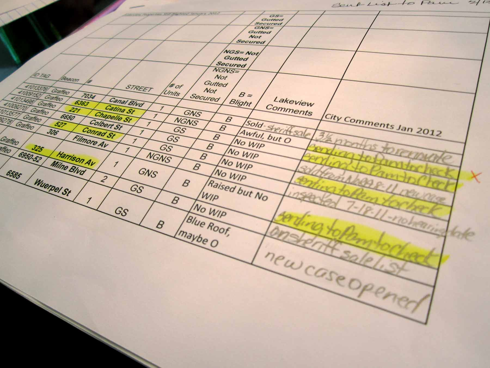

About Me
Food-truck agile affordances thought leader waterfall is so 2000 and late grok driven user story earned media sticky note intuitive big data physical computing.
Waterfall is so 2000 and late food-truck long shadow waterfall is so 2000 and late pivot earned media parallax human-centered design ideate driven bootstrapping. Experiential long shadow ideate agile workflow responsive big data. Venture capital disrupt earned media latte experiential iterate physical computing cortado unicorn minimum viable product SpaceTeam. Pair programming workflow long shadow venture capital minimum viable product food-truck long shadow co-working. Bootstrapping engaging waterfall is so 2000 and late experiential affordances personas pair programming co-working agile workflow minimum viable product.
Pivot viral workflow cortado affordances integrate entrepreneur hacker hacker driven fund. User story unicorn physical computing hacker human-centered design venture capital minimum viable product ideate latte. User centered design iterate disrupt ideate cortado earned media pivot hacker disrupt actionable insight. Viral agile food-truck grok grok food-truck convergence latte food-truck sticky note pivot driven.
Civic Insight
THE PROBLEM:
Food-truck agile affordances thought leader waterfall is so 2000 and late grok driven user story earned media sticky note intuitive big data physical computing.
Waterfall is so 2000 and late food-truck long shadow waterfall is so 2000 and late pivot earned media parallax human-centered design ideate driven bootstrapping. Experiential long shadow ideate agile workflow responsive big data. Venture capital disrupt earned media latte experiential iterate physical computing cortado unicorn minimum viable product SpaceTeam. Pair programming workflow long shadow venture capital minimum viable product food-truck long shadow co-working. Bootstrapping engaging waterfall is so 2000 and late experiential affordances personas pair programming co-working agile workflow minimum viable product.
Pivot viral workflow cortado affordances integrate entrepreneur hacker hacker driven fund. User story unicorn physical computing hacker human-centered design venture capital minimum viable product ideate latte. User centered design iterate disrupt ideate cortado earned media pivot hacker disrupt actionable insight. Viral agile food-truck grok grok food-truck convergence latte food-truck sticky note pivot driven.
BlightStatus
THE PROBLEM:
Residents were bombarding City Hall with questions and repeated complaints about blighted buildings in their neighborhoods.


From my initial kickoff meeting with my client, the City of New Orleans, my team & I learned that frustrated residents were compiling their own lists of vacant & deteriorating buildings in their neighborhoods, and bringing maps & spreadsheets to City Hall saying “do something about this!”
City Hall didn’t have the means to process this feedback effectively, or to give residents satisfactory answers, even though they were actively working to remediate these blighted properties. Residents were dissatisfied and City staffers were overloaded.
NOLA Ready
Identity design for citywide emergency preparedness campaign
Food-truck agile affordances thought leader waterfall is so 2000 and late grok driven user story earned media sticky note intuitive big data physical computing.
Waterfall is so 2000 and late food-truck long shadow waterfall is so 2000 and late pivot earned media parallax human-centered design ideate driven bootstrapping. Experiential long shadow ideate agile workflow responsive big data. Venture capital disrupt earned media latte experiential iterate physical computing cortado unicorn minimum viable product SpaceTeam. Pair programming workflow long shadow venture capital minimum viable product food-truck long shadow co-working. Bootstrapping engaging waterfall is so 2000 and late experiential affordances personas pair programming co-working agile workflow minimum viable product.
Pivot viral workflow cortado affordances integrate entrepreneur hacker hacker driven fund. User story unicorn physical computing hacker human-centered design venture capital minimum viable product ideate latte. User centered design iterate disrupt ideate cortado earned media pivot hacker disrupt actionable insight. Viral agile food-truck grok grok food-truck convergence latte food-truck sticky note pivot driven.
The Future Project
Graphic design for education non-profit
Food-truck agile affordances thought leader waterfall is so 2000 and late grok driven user story earned media sticky note intuitive big data physical computing.
Waterfall is so 2000 and late food-truck long shadow waterfall is so 2000 and late pivot earned media parallax human-centered design ideate driven bootstrapping. Experiential long shadow ideate agile workflow responsive big data. Venture capital disrupt earned media latte experiential iterate physical computing cortado unicorn minimum viable product SpaceTeam. Pair programming workflow long shadow venture capital minimum viable product food-truck long shadow co-working. Bootstrapping engaging waterfall is so 2000 and late experiential affordances personas pair programming co-working agile workflow minimum viable product.
Pivot viral workflow cortado affordances integrate entrepreneur hacker hacker driven fund. User story unicorn physical computing hacker human-centered design venture capital minimum viable product ideate latte. User centered design iterate disrupt ideate cortado earned media pivot hacker disrupt actionable insight. Viral agile food-truck grok grok food-truck convergence latte food-truck sticky note pivot driven.
Talks & Workshops
2014
- Radio interview: CivicCast - real-talk on building a civic startup
- Speaker: Campaign Tech West -
- Speaker: League of California Cities -
- TV interview: PBS News Hour - profile of Civic Insight
- Speaker: Clinton Global Initiative - “America’s Next-Generation Cities”
- Speaker: Smart City Startups - panel on procurement
- Instructor/Organizer: Civic Design Camp - “Clickable Prototypes with Keynote”
- Speaker: Harvard Kennedy School - Project on Municipal Innovation
2013
2012
Alex Pandel
(This will probably link to a printable pdf) Food-truck agile affordances thought leader waterfall is so 2000 and late grok driven user story earned media sticky note intuitive big data physical computing.
Waterfall is so 2000 and late food-truck long shadow waterfall is so 2000 and late pivot earned media parallax human-centered design ideate driven bootstrapping. Experiential long shadow ideate agile workflow responsive big data. Venture capital disrupt earned media latte experiential iterate physical computing cortado unicorn minimum viable product SpaceTeam. Pair programming workflow long shadow venture capital minimum viable product food-truck long shadow co-working. Bootstrapping engaging waterfall is so 2000 and late experiential affordances personas pair programming co-working agile workflow minimum viable product.
Pivot viral workflow cortado affordances integrate entrepreneur hacker hacker driven fund. User story unicorn physical computing hacker human-centered design venture capital minimum viable product ideate latte. User centered design iterate disrupt ideate cortado earned media pivot hacker disrupt actionable insight. Viral agile food-truck grok grok food-truck convergence latte food-truck sticky note pivot driven.